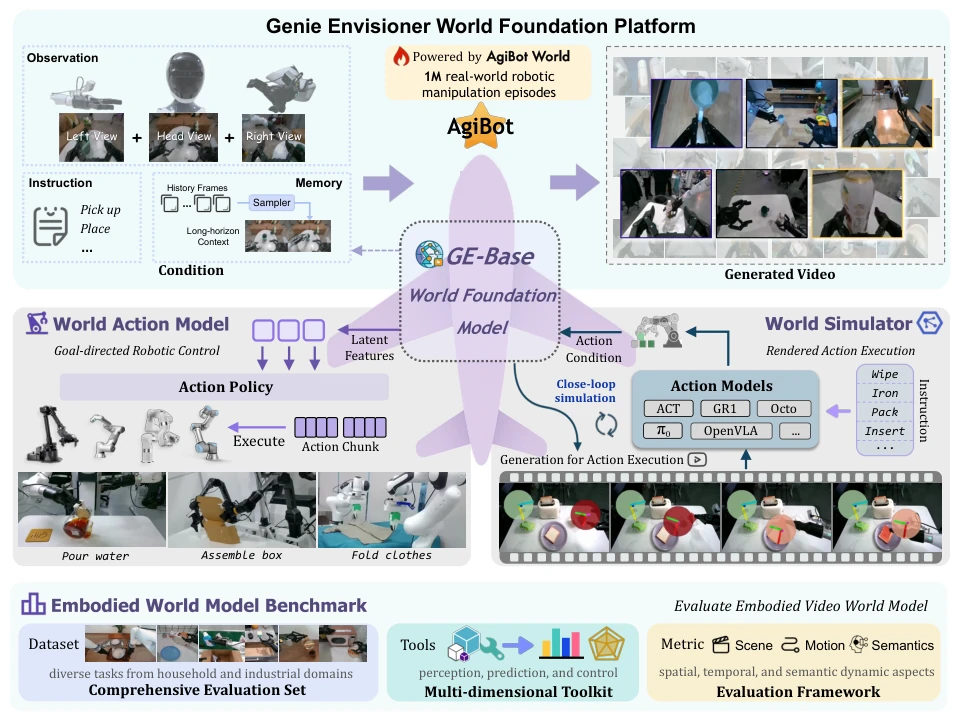
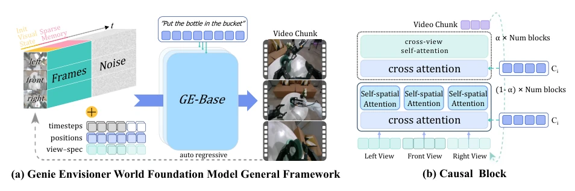
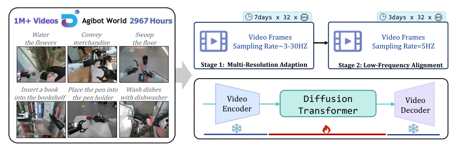
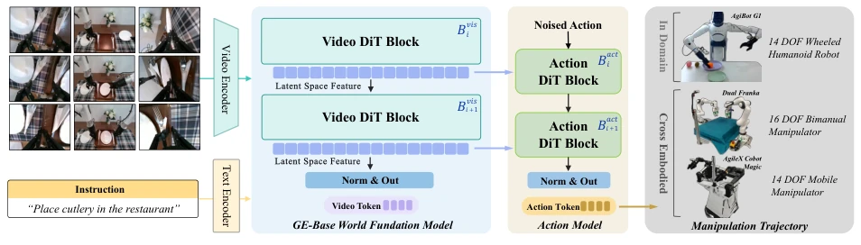
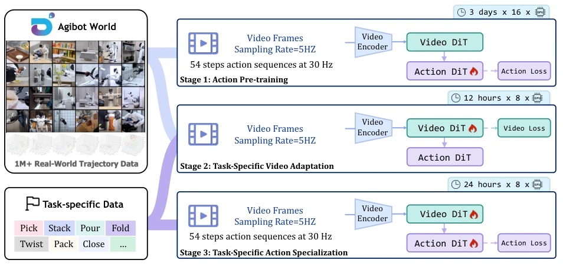
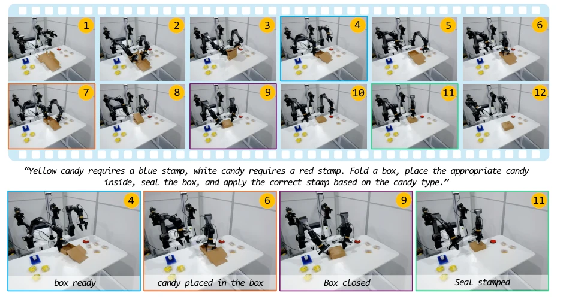
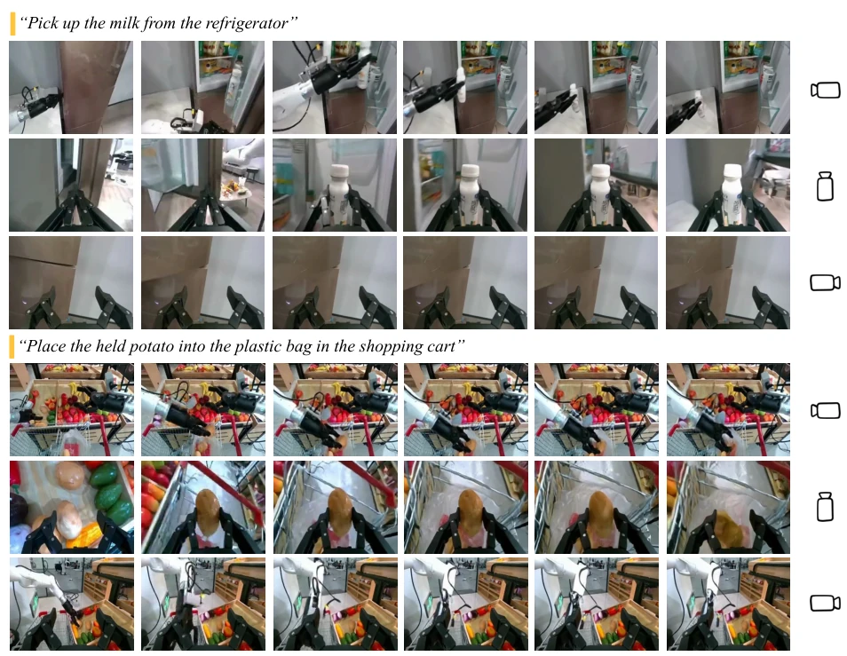
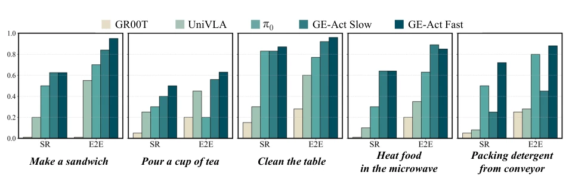
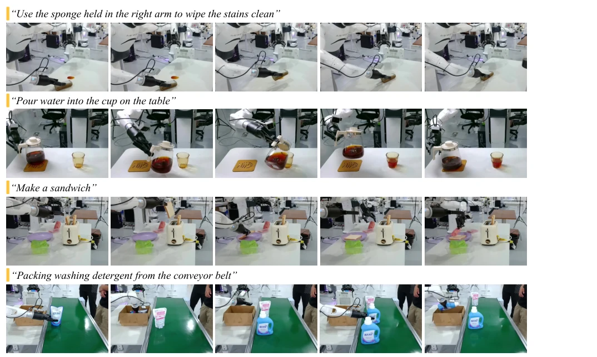
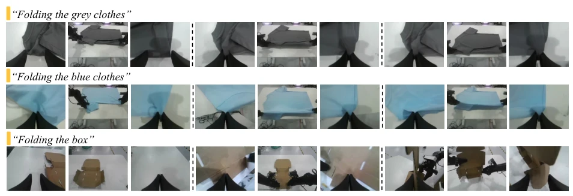

This paper attempts to unify the learning, evaluation, and simulation of robot manipulation using video generation models. It sounds appealing, but the core is still the old routine of "video generation + action decoding". GE-Base is indeed a multi-view video diffusion model, but using a world model as a policy base carries the risk of whether the quality of generated videos can truly guide control, after all, generating videos does not equal generating actions. GE-Act uses flow matching to decode actions; although fast, it relies on pretraining with large amounts of real data, and still requires caching visual tokens during inference. The biggest drawback is its heavy reliance on AgiBot's own data; although cross-platform generalization employs few-shot, it is essentially fine-tuning, and the hardware computing power requirements are not low. However, proposing the evaluation benchmark EWMBench is a highlight, given that robot papers currently lack reliable evaluations, especially regarding physical consistency.
研究动机Motivation
现有具身智能系统面临严重的“碎片化”问题：数据采集、训练、评估各阶段基础设施不互通，导致迭代慢、复现难。主流 VLA 方法（如 UniVLA (Bu et al., 2025b), GR00T N1 (Bjorck et al., 2025)）倾向于将视觉映射到语言空间，丢失了精细的时空动态信息，难以处理复杂物理交互。论文指出这种语言中心范式难以忠实建模机器人 - 环境交互，且现有系统缺乏统一框架进行端到端策略学习与评估。Genie Envisioner 旨在构建一个统一的视频生成世界模型平台，通过视觉中心的空间表征保留更多物理线索，解决现有系统缺乏统一框架进行端到端策略学习与评估的痛点，实现感知、规划、控制的闭环。
Existing embodied AI systems face severe "fragmentation" issues: infrastructure for data collection, training, and evaluation stages is not interoperable, leading to slow iteration and difficult reproduction. Mainstream VLA methods (e.g., UniVLA (Bu et al., 2025b), GR00T N1 (Bjorck et al., 2025)) tend to map vision to language space, losing fine-grained spatiotemporal dynamic information, making it difficult to handle complex physical interactions. The paper points out that this language-centric paradigm struggles to faithfully model robot-environment interactions, and existing systems lack a unified framework for end-to-end policy learning and evaluation. Genie Envisioner aims to build a unified video generation world model platform, retaining more physical cues through vision-centric spatial representations, addressing the pain point of existing systems lacking a unified framework for end-to-end policy learning and evaluation, and achieving a closed loop of perception, planning, and control.

Figure 1: Overview of the Genie Envisioner World Foundation Platform. Genie Envisioner is a unified world foundation platform that integrates manipulation policy learning and evaluation within a single video-generative framework. At its core lies GE-Base, a large-scale world model that encodes the spatial, temporal, and semantic structure of robotic interactions. Built around it are two key functional modules: GE-Act, a world action model that infers instruction-conditioned policies, and GE-Sim, a video-based WORLD SIMULATOR that enables closed-loop execution through action-conditioned generation. The platform is complemented by EWMBench, an integrated evaluation suite that assesses visual fidelity, physical plausibility, and instruction-policy alignment. GE thus provides a practical and s
方法Method
整体架构分为三层：GE-Base 是核心世界模型，基于 LTX-Video 或 COSMOS2 构建多视角 DiT，采用自回归视频生成，引入稀疏记忆机制捕捉长时依赖。训练分两阶段：先多分辨率适应运动动态，再低帧率对齐策略时序。GE-Act 是并行动作解码器，将视觉潜在特征映射为动作轨迹，采用流匹配（Flow-Matching）生成，支持异步推理（视频 5Hz，动作 30Hz）以降低延迟。GE-Sim 利用生成动态构建神经仿真器。训练流程上，GE-Act 经历动作预训练、任务视频适配、任务动作微调三阶段，确保感知与控制对齐。此外，通过 Slow-Fast 异步推理模式，视频 DiT 单次去噪，动作 DiT 五次去噪，显著优化了计算资源分配。
The overall architecture is divided into three layers: GE-Base is the core world model, built on LTX-Video or COSMOS2 as a multi-view DiT, adopting autoregressive video generation, introducing a sparse memory mechanism to capture long-term dependencies. Training is divided into two stages: first multi-resolution adaptation to motion dynamics, then low frame rate alignment to policy timing. GE-Act is a parallel action decoder, mapping visual latent features to action trajectories, adopting Flow-Matching generation, supporting asynchronous inference (video 5Hz, action 30Hz) to reduce latency. GE-Sim utilizes generated dynamics to build a neural simulator. In terms of training flow, GE-Act undergoes three stages: action pretraining, task video adaptation, and task action fine-tuning, ensuring alignment between perception and control. Additionally, through the Slow-Fast asynchronous inference mode, video DiT performs single denoising, action DiT performs five denoising steps, significantly optimizing computational resource allocation.

Figure 3: Overview of the GE-Base World Foundation Model. (a) An illustration of the autoregressive video generation process. Given multi-view visual conditions, including the initial observation and sparse memory, along with corresponding noise and positional embeddings, the model generates the next multi-view video chunk conditioned on a language instruction. (b) A dedicated causal block facilitates information exchange across different views, ensuring spatial consistency during multi-view video chunk generation.

Figure 4: Overview of the GE-Base Training Process. GE-Base is pre-trained on AgiBot-World-Beta, a large-scale real-world dual-arm robotic manipulation dataset containing 1 million instruction-aligned, multi-view video sequences. The training begins with a domain adaptation phase, transferring general video generation capabilities into the robotic domain using high-frame-rate sequences and mixed sampling strategies to enhance robustness. This is followed by a low-frame-rate fine-tuning stage designed to align the model with the temporal resolution required for downstream action policy training. Throughout the process, the video encoder and video decoder remain fixed.

Figure 6: Overview of the GE-Act World Action Model. GE-Act extends the GE-Base foundation model by incorporating a parallel action branch that converts visual latent representations into structured action policy trajectories. It follows the same block design and depth as GE-Base but reduces the hidden dimensions to improve efficiency. Visual latent features are integrated into the action pathway through a cross-attention mechanism, ensuring the semantic grounding of actions. Final action predictions are generated using a diffusion-based denoising flow-matching pipeline, refining noisy action predictions into coherent action trajectories.

Figure 7: Overview of the GE-Act Training Pipeline. GE-Act is derived from the GE-Base foundation model through a three-stage training process utilizing text–video–policy triplets from the AgiBot-World-Beta dataset. The first stage performs action-space pretraining, where the visual backbone is optimized to project video sequences into a latent action policy space. Subsequently, a two-stage task adaptation procedure is conducted to specialize the model for diverse downstream tasks. In this phase, the video encoder is first adapted using task-specific visual data, followed by fine-tuning of the action head using corresponding control signals.
Uses the AgiBot-World-Beta dataset (1 million+ real manipulation clips). Tested on AgiBot G1, Dual Franka, Agilex Cobot Magic. Baselines include UniVLA, GR00T N1, π0. Metrics are SR and E2E. Results show GE-Act significantly outperforms baselines on G1, especially on complex tasks (such as folding clothes). Cross-platform generalization takes effect with only 1 hour of teleoperation data fine-tuning. EWMBench evaluation shows GE-Base outperforms existing video generation models in visual fidelity and physical consistency. Ablation studies indicate that domain pretraining and robot state input are key to performance improvement, and the Fast mode performs better in dynamic tracking tasks.

Figure 2: Real-world demonstration of GE-Act on a novel robot embodiment, Agilex Cobot Magic, unseen during pretraining. With only one hour of embodiment- and task-specific teleoperation data for post-training, GE-Act successfully executes a complex manipulation task involving fine-grained control of deformable objects and memory- based decision making. Given a general packaging rule, the robot is required to complete the packing process for each item accordingly. Here, we showcase the detailed execution of the first packing cycle. The robot first stacks a deformable box, places a target object inside based on instruction, and closes the lid, rendering the object no longer visible. It then correctly selects and applies the appropriate stamp, matching the object type, relying solely on inte

Figure 5: Multi-View Robotic Manipulation Videos Generated on AgiBot G1 by GE-Base. We visualize robotic manipulation sequences generated by GE-Base across two tasks involving varied objects and environments. For each example, videos from three views are presented, i.e., the head-mounted, left-, and right-arm cameras, respectively.

Figure 8: Comparison of Task-Specific Real-World Robotic Manipulation Performance on the AgiBot G1 Platform. We compare GE-Act with state-of-the-art VLA baselines across multiple real-world dual-arm robotic tasks, using two evaluation metrics to assess performance.

Figure 9: Visualization of Real-World Robotic Manipulation on AgiBot G1 via GE-Act. Conditioned on natural language instructions, GE-Act generates and executes action policies on the AgiBot G1 platform. The visual samples demonstrate the model’s capability to produce consistent, reliable, and contextually appropriate manipulation behaviors, showcasing its robustness and effectiveness in real-world environments.

Figure 10: Multi-View Video Generation on the Agilex Cobot Magic Robotic Platform by GE-Base. Visualization of instruction-conditioned video generated by GE-Base for two complex folding tasks on the cross-embodiment Agilex Cobot Magic robot. Each row displays temporally sampled frames from a multi-view sequence.